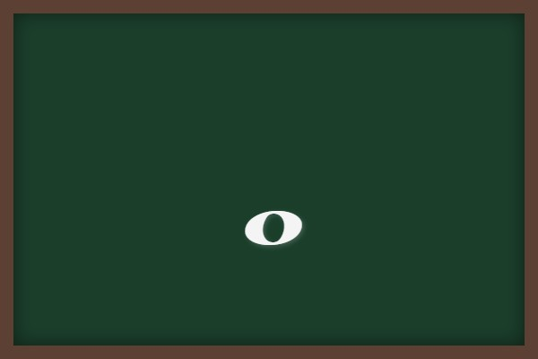
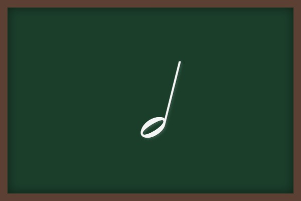
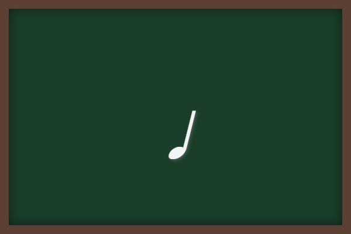
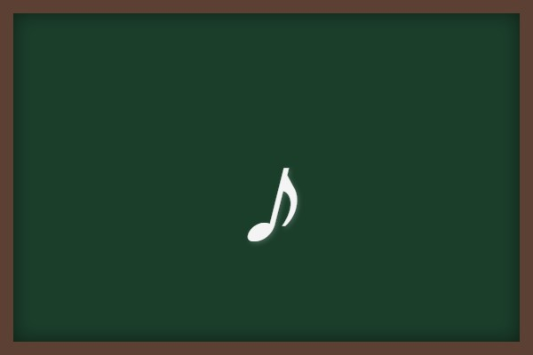
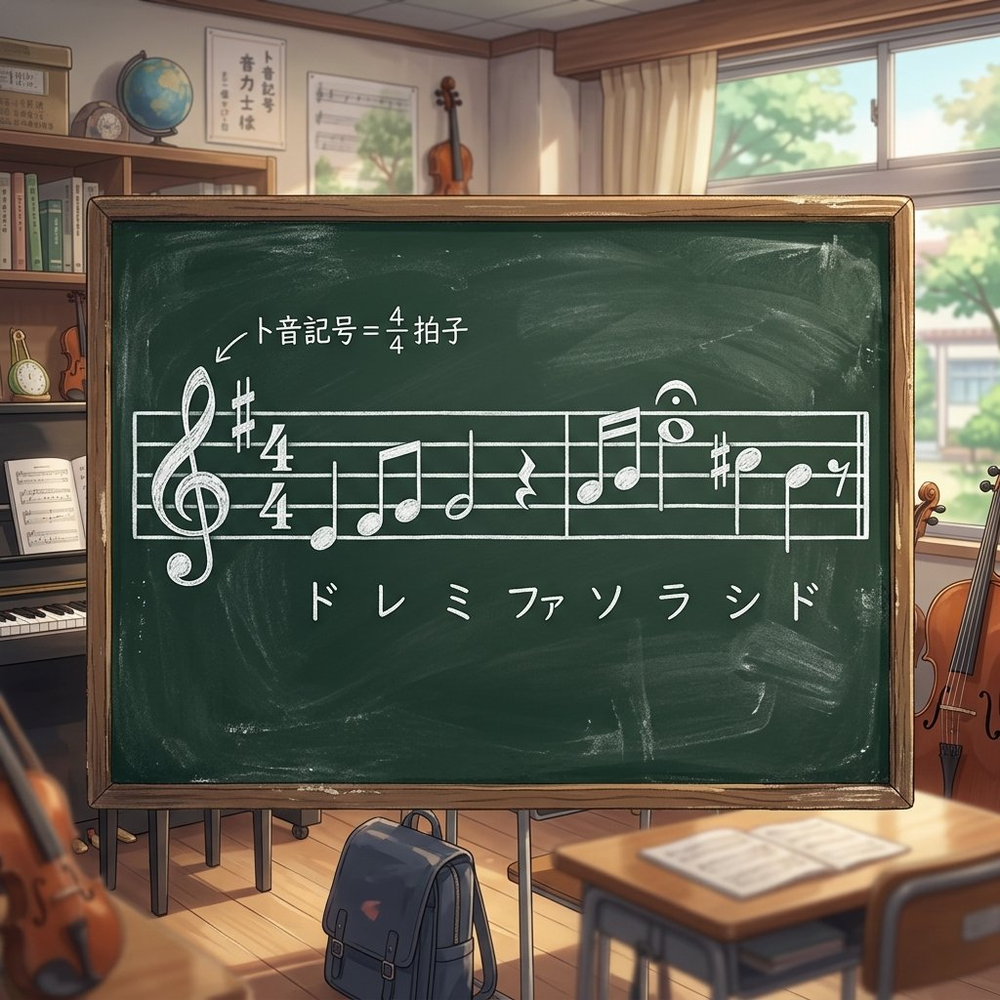
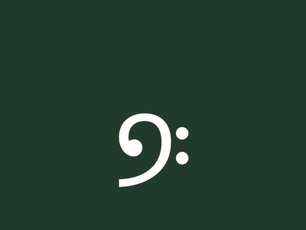

音楽の知識① (記号やリズム・音符と休符)
楽譜を正しく読み取るための「楽典の超基本」を整理します。定期テストで確実に出題される音符・休符の形や名前、長さの計算問題、楽譜の最初に置かれる各種記号の意味、日本の音名（ハニホヘトイロ）をしっかりマスターしましょう！
1. 音符と休符の基本
音を出す長さを表す「音符」と、音を休む長さを表す「休符」の形と名称を一致させましょう。
① 音符の名称と形




② 休符の名称と形
2. 音符と休符の長さの計算（テスト必出！）
音符や休符を足し合わせて、1つの音符・休符にまとめる計算問題です。基準となる長さを意識して暗記しましょう。
- 8分音符 ＋ 8分音符 ➔ 4分音符 （0.5拍＋0.5拍＝1拍）
- 付点4分音符 ＋ 8分音符 ➔ 2分音符 （1.5拍＋0.5拍＝2拍）
- 2分音符 ＋ 2分音符 ➔ 全音符 （2拍＋2拍＝4拍）
- 4分休符 ＋ 4分休符 ➔ 2分休符 （1拍＋1拍＝2拍休む）
- 8分休符 ＋ 8分休符 ➔ 4分休符 （0.5拍＋0.5拍＝1拍休む）
- 2分音符は、8分音符4個分の長さに相当します。
3. 楽譜の始まりの記号（三つの記号）
五線譜の左端に並ぶ、曲の演奏条件を示す重要な3つの記号の定義です。

五線譜の左端には、音部記号、調号、拍子記号の順に並びます。
- 音部記号（おんぶきごう）：ト音記号やヘ音記号（

）など、音域（音の高さの範囲）を示すために五線の最初に書く記号。 - 調号（ちょうごう）：♯（）や♭を使って、その曲の調（キー）を表すために五線の最初に書く記号。
- 拍子記号（ひょうしきごう）：数字の分数のように書いて、その曲の拍子（リズムのまとまり）を表す記号。
① 拍子記号の分数の意味
拍子記号に書かれた分数の上下の数字は、それぞれ以下の意味を持ちます（穴埋め頻出！）。
- 上の数字 ➔ 1小節内の拍数 （何拍入るか）
- 下の数字 ➔ 1拍に数える音符の種類 （どの音符を基準にするか）
② 具体的な拍子の意味
- 4分の4拍子 ➔ 4分音符を1拍として、1小節に4拍入る拍子。
- 8分の6拍子 ➔ 8分音符を1拍として、1小節に6拍入る拍子。
- 2分の2拍子 ➔ 2分音符を1拍として、1小節に2拍入る拍子。
4. 五線譜の構造と日本の音名
① 五線譜の線と間の名前
五線譜の5本の線は、下から順番に数えます。
- 五線の5本の線のうち、一番下の線を第1線（だいいっせん）と呼びます。（一番上は「第5線」）
② 日本の音名（ドレミ ➔ ハニホヘトイロ）
イタリア語の階名「ド・レ・ミ・ファ・ソ・ラ・シ」を、日本の伝統的な音名で表すと、いろは順に対応します。
ハ ➔ ニ ➔ ホ ➔ ヘ ➔ ト ➔ イ ➔ ロ
🔥 定期テスト対策・暗記のコツ
① 全休符と2分休符の見分け方
「全休符は第4線からぶら下がる（下向きの帽子）」「2分休符は第3線の上に乗る（上向きの帽子）」です。線に対してどちらに付いているかでテストで引っかかりやすいので、必ず見分けられるようにしましょう。
② 拍子記号の分数の「上下」のひっかけ
テストでは「上が拍数」「下が基準音符」をあえて逆に記述させる選択肢が出ます。例えば、4分の3拍子の定義は「4分音符を基準（下）に、1小節に3拍（上）」と、頭の中で分数の上下を逆から訳すように覚えると間違いありません！
③ 日本の音名のスタート位置
「ド」が「ハ」から始まります。「ハ・ニ・ホ・ヘ・ト・イ・ロ」の順です。ちなみに、クラシックでよく聴く「ハ長調」は、主音が「ド（ハ）」で始まる明るい曲（長調）という意味になります。